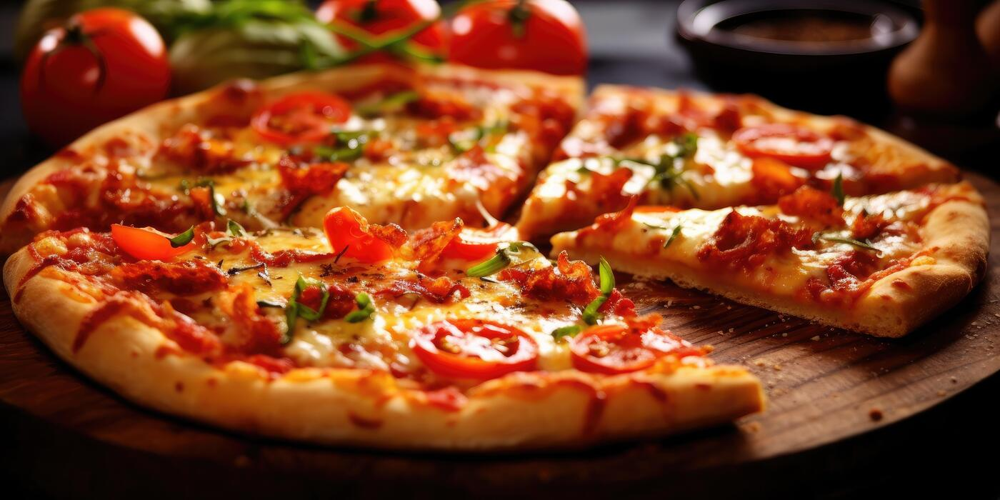
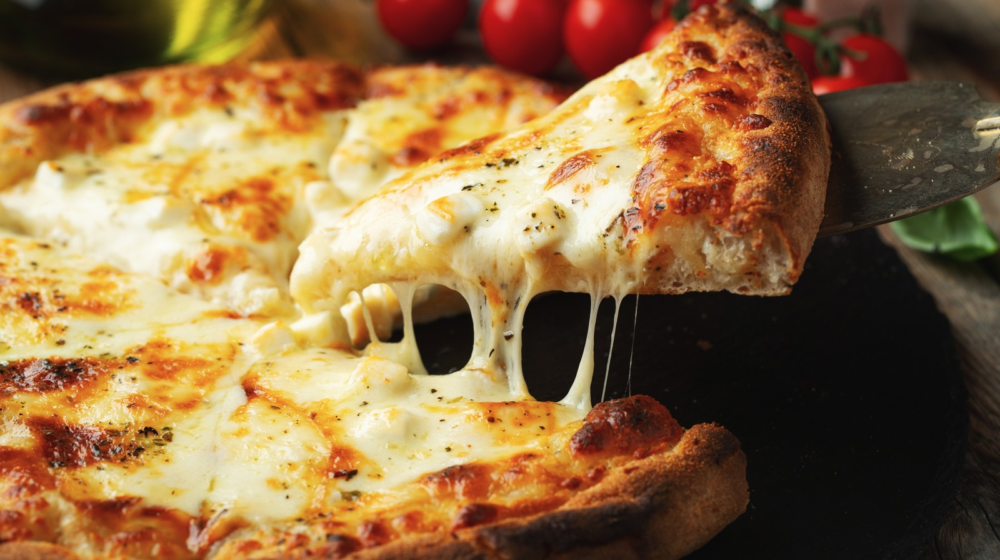

Chinese cuisine is an important part of Chinese culture, which includes cuisine originating from the diverse regions of China, as well as from Chinese people in other parts of the world. Because of the Chinese diaspora and historical power of the country, Chinese cuisine has influenced many other cuisines in Asia, with modifications made to cater to local palates. Chinese food staples such as rice, soy sauce, noodles, tea, and tofu, and utensils such as chopsticks and the wok, can now be found worldwide.
Pizza

Pizza is an Italian food that was created in the Naples area, Southern Italy. It is made with different toppings. Some of the most common toppings are mozzarella (a kind of cheese), sausages, pepperoni, vegetables, tomatoes, spices, herbs, and basil. These toppings are added over a piece of bread covered with sauce. The sauce is most often tomato-based, but butter-based sauces are used, too. The piece of bread is usually called a "pizza crust". Almost any kind of topping can be put over a pizza. The toppings used are different in different parts of the world. Pizza comes from Italy, from Neapolitan cuisine. However, it has become popular in many parts of the world.
Pizza is an Italian food that was created in the Naples area, Southern Italy. It is made with different toppings. Some of the most common toppings are mozzarella (a kind of cheese), sausages, pepperoni, vegetables, tomatoes, spices, herbs, and basil. These toppings are added over a piece of bread covered with sauce. The sauce is most often tomato-based, but butter-based sauces are used, too. The piece of bread is usually called a "pizza crust". Almost any kind of topping can be put over a pizza. The toppings used are different in different parts of the world. Pizza comes from Italy, from Neapolitan cuisine. However, it has become popular in many parts of the world.